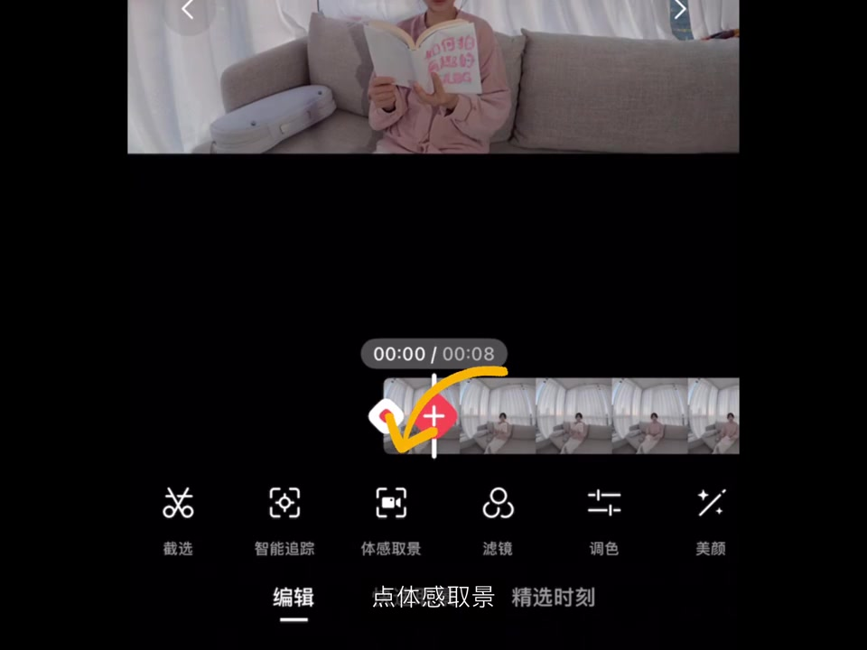
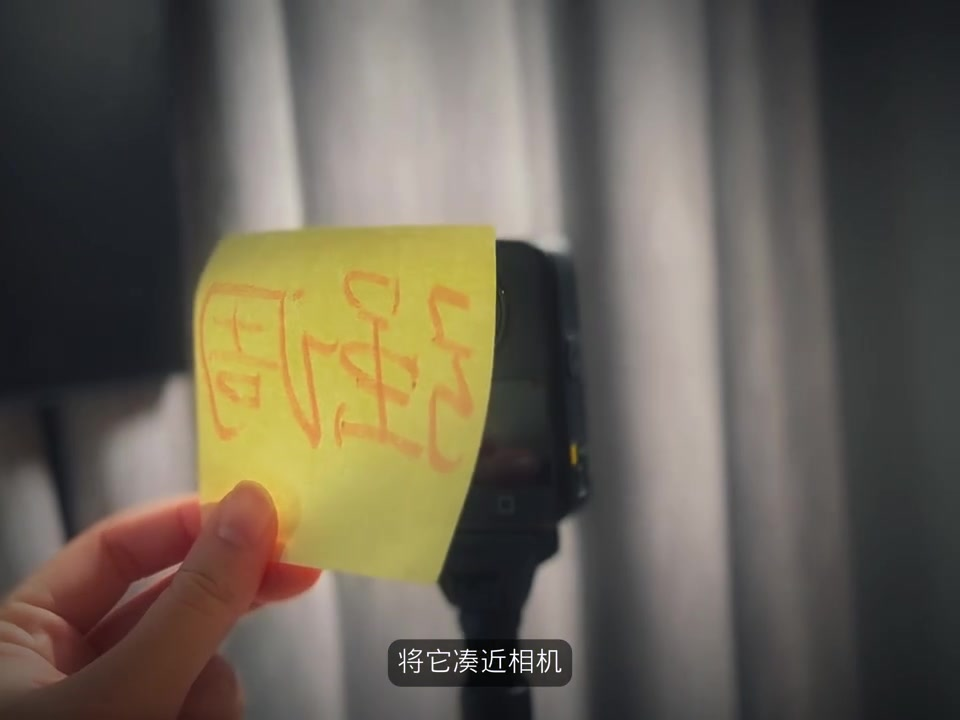
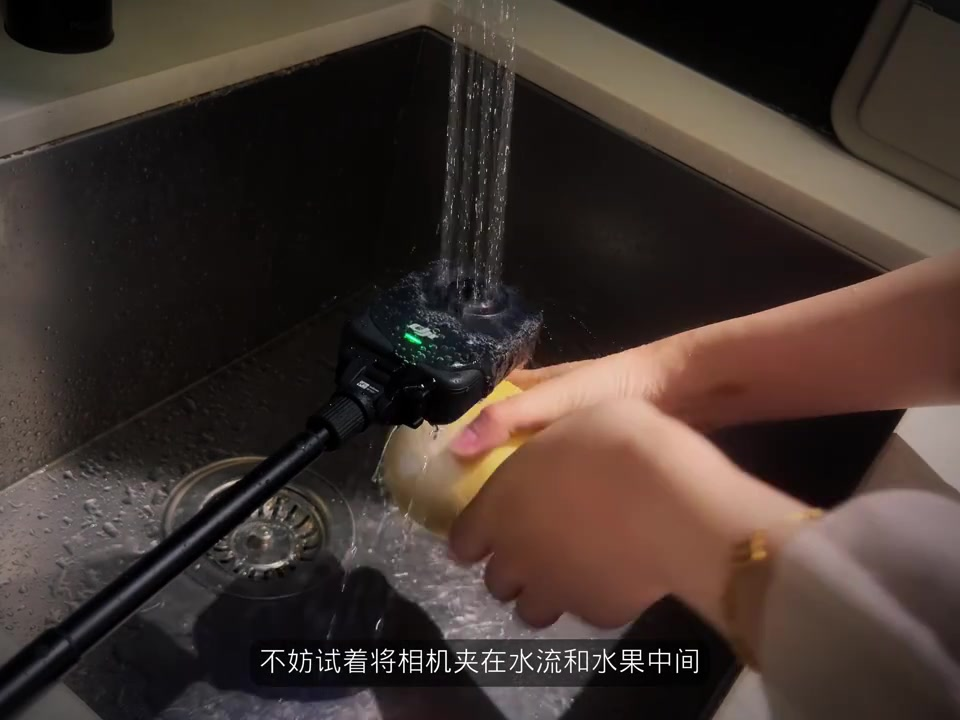
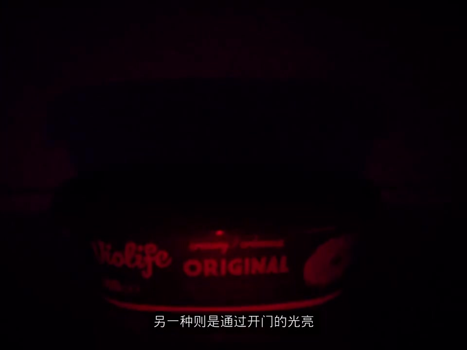
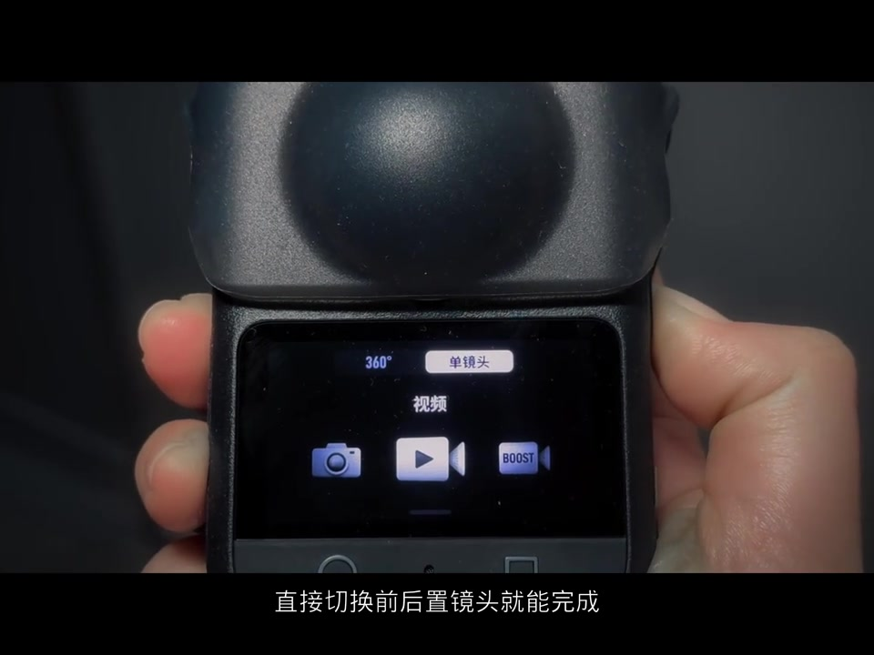

开场：买了全景相机，为什么还是拍不出有趣 vlog
画面一开始就是夸张的“委屈脸”：作者把翻开的书怼到镜头前，粉字写着「如何拍」，字幕直接替观众喊出心声——为什么我拍不出有趣的 vlog。紧接着话锋一转：你连全景相机都买了呀，那是因为你还没把它和日常生活真正结合起来。
说明：Whisper 把「全景相机」识成「缺體相機」、把「DJI Mimo」识成「DGM MIMOアクリル」、把「极广角」识成「極光腳」、把「全周视角」识成「全智視角」、把「全景相机」识成「前景相機」、把「无风」识成「無分」、把「甩镜转场」识成「是叫的轉場」、把「体感取景」识成「提感取景」、把「一致」识成「移植」等。下文叙事以可见字幕与画面为准，文末转录区仍完整保留全部原始分段。设备与 App 在画面中可见为 DJI 全景机与 DJI Mimo；笔记话题含「大疆Osmo360」。
可见字幕/口播 [00:00–00:07]：「为什么我拍不出有趣的vlog呢」「你连……全景相机都买了呀」「那是因为你呀」「还没结合日常生活」。
Chapter 1｜追踪物体：特写 → 跟随 → 引出人物
第一章标题直接打在画面上：「Chapter 1 追踪物体」。桌上黑框眼镜的特写先抓住注意力，手伸进来拨动镜腿，镜头跟着物品移动，再把人带进画面。作者强调：拍摄时选全景视频，后期到 DJI Mimo 里手动调视角，或直接开智能追踪，让运镜自动完成。

可见字幕 [00:07–00:19]：「我们可以先用一个特写吸引观众」「再伴随物品移动」「引出人物」「拍摄的时候选择全景视频」「后期在DJI MIMO APP里手动调整视角」「或者直接用智能追踪」「让它自动完成运镜」。
想强调某样东西：把它凑近相机，用极广制造反差
下一招更狠：当你想强调某样事物，就把它凑进镜头。手持便签贴近机身，极广角立刻把物件撑满前景，背景被迅速推远——反差感很强。作者补充：前一秒画面信息密度越高，后面这个“突然凑近”的物件越容易跳出来。

可见字幕 [00:19–00:29]：「当你想强调某样事物时」「将它凑近相机」「用极广角拍摄制造反差感」「前一秒展现的信息密度越高」「越能突出后段凑进的物品」。
奇特视角—镜子：全周视角拍镜子场景
大字标题换成「奇特视角—镜子」。洗手池里水流冲在手上，构图像从镜面/玻璃一侧偷窥。作者说：利用相机的全周视角拍镜子相关场景，不仅后期好运镜，也不用太担心把相机本体拍进去。
可见字幕 [00:29–00:35]：「还可以利用相机的全周视角」「拍摄镜子相关场景」「不仅能够后期帮助运镜」「还不用担心拍到相机」。
洗水果：把相机夹在水流和水果中间
厨房水槽戏份更直观——黑色全景机夹在水龙头水流和黄绿色水果之间，绿灯亮着，水珠打在机身上。作者怂恿：不妨试试这个夹角，能拍出非常新奇的效果。

可见字幕 [00:35–00:40]：「洗水果时」「不妨试着将相机夹在水流和水果中间」「可以拍出非常新奇的效果」。
冰箱场景的两种思路，一次拍完
冰箱戏给了两条路：一种像第一章那样用物品跟踪，再落到人物；另一种更戏剧——画面先几乎全黑，只剩开门后的微光打在 Violife 包装上，再切到人物特写，最后用广角收束。作者强调：无论哪种思路都只要拍摄一次，这正是全景相机的优势。

可见字幕 [00:40–00:53]：「冰箱场景有两种思路」「一种像第一章里讲的一样」「用物品跟踪」「落到人物」「另一种则是通过开门的光亮」「切换到人物特写」「最后再用广角收尾」「无论哪种思路都只要拍摄一次」「这也是全景相机的优势」。
先环境后人物：三脚架、隐形自拍杆、超级夜景
全景还能做「先环境、后人物」的有趣运镜。作者提醒：记得固定好三脚架，最好在无风环境；若遇风或没法架支架，也可以手持——保持机身和隐形自拍杆在一条线上，杆子就会自动消失。夜晚拍摄则记得开超级夜景模式。
画面里，她在夜间室内手持自拍杆，大字叠「先环境后人物 / 第一视角」，字幕同步讲对齐杆子的要点。
可见字幕 [00:53–01:14]：「全景还能实现先环境」「后人物的有趣运镜」「记得要固定好三脚架」「最好在无风的环境下进行」「要是遇上风……条件不允许架支架的话」「也可以手持拍摄」「保持机身和隐形自拍杆」「在一条线上」「杆子就会自动消失」「夜晚拍摄记得用超级夜景模式哦」。
单镜头模式：讲话时切换前后置，语音不断
如果想更随意地介绍环境和人物，可以切到单镜头模式，直接切换前后置就能完成「先环境后人物」。机身屏幕上可见「360° / 单镜头」切换，当前落在「单镜头 · 视频」。作者特别喜欢的一点：讲话过程中切换前后置，完全不会中断语音——非常日常、也非常实用。

可见字幕 [01:20–01:39]：「如果想更随意的介绍环境和人物」「可以用单镜头模式」「直接切换前后置镜头就能完成」「这个模式有点好处就是」「我在讲话的时候切换前后置镜头」「是完全不会中断我的语音的」「这样也能够达到」「先环境后人物的出场方式吧」「我觉得它还是挺实用的」。
第三人称甩镜转场：固定全景 + 体感取景拼接
收尾大招是「第三人称甩镜转场」——以前像需要两个人配合的镜头，现在一个人也能拍。方法很简单：相机固定不动，录一段全景；核心思路是后期让前后两段视频的运动方向一致。打开 DJI Mimo，点「体感取景」，既能模拟手持动感，也能用手势带动视角做出向右甩的效果；下一个视频再顺着同样方向甩进来，在剪辑软件里一拼接就搞定。
作者最后说：现在把刚刚讲的用上，拍一个小片段吧，注意看我用了哪些小技巧——视频进入综合示范段落。
可见字幕 [01:44–02:18]：「这种第三人称甩镜的转场」「现在一个人也能轻松拍出来啦」「相机固定不动」「开始录制一段全景视频」「这个思路是通过后期编辑」「来让前后两段视频的运动方向一致」「打开 DJI MIMO app」「点体感取景」「这样不仅可以模拟手持相机的动感」「还能……用手势带动视角」「……做出相机向右甩的效果」「下一个视频再顺着同样的方向甩进来」「在剪辑软件里一拼接就搞定了」。
这一趟日常怎么变有趣
八个玩法并不神秘：特写追踪、极广凑近、镜子全周、水流夹拍、冰箱光影、先环境后人物、单镜头说话切换、固定机位甩镜拼接。共享前提是「先录全景、再取景」——拍摄一次，给后期留足空间。笔记文案也写到：日常其实很普通，是全景相机让转场变得一个人也能玩。